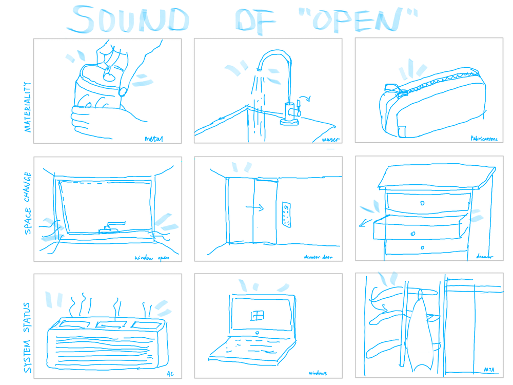

Sep. 12th 2022
There is extensive information and data embedded in sounds. Materiality, sense of spaces, and even time can be depicted by sound. One impressive soundtrack in the article is about the lava in Hawaii. It creates the sound of glass crashing, which identifies the materiality of lava from another perspective. When we think about lava you have the impression of supered-hot, red colored, liquid. Moreover, audiences can picture the journey of lava, from the mouth of a volcano to the land, until meeting the ocean. Sound is easily ignored by our human beings who is visual-driven animals. One interesting phenomenon is both visual sense and acoustic sense are senses of humans’, but how come our perception is dominated by visual observation rather than listening? Indeed, sound can be cheating or ambiguous, when lacking the knowledge of certain background or context. Take the soundscape made by shrimp lived on reefs in Virgin Island for example again, without the explanation of the researchers and images, audiences will think the sound is raining days or burning a bacon on fire.
